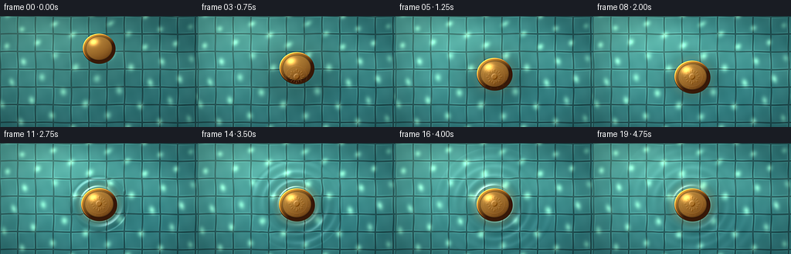
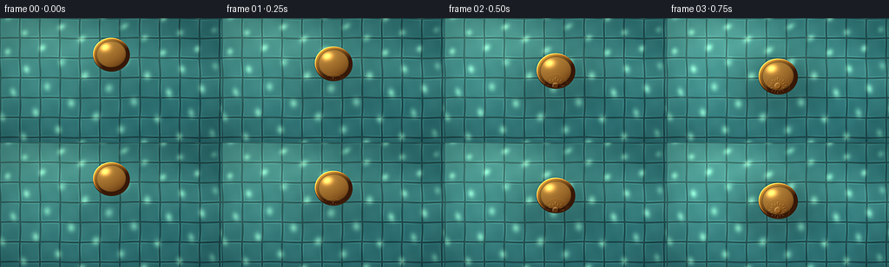

CODING AGENTS AS PIXEL WORLD MODELS
traex/DeepSeek-V4.1-Flash · mechanics_0012
点击播放 · 原生 RGB 像素
此结果可播放，但该运行尚未通过最终提交审核。页面展示不代表评测通过。
逐轮保存的候选
回放视频、检查图与代码变化。
每份候选均可单独播放。实际图片检查记录在下方工具轨迹中。
候选 01播放与检查图
点击播放 · 原生 RGB 像素


展开代码变化
--- 上一保存版本
+++ 本次保存版本
@@ -0,0 +1,330 @@
+from pathlib import Path
+
+import numpy as np
+from PIL import Image, ImageDraw, ImageFilter
+
+import artifact_io
+
+
+OUT_W, OUT_H = 256, 144
+SCALE = 4
+W, H = OUT_W * SCALE, OUT_H * SCALE
+FPS = 4.0
+FRAME_COUNT = 20
+CONTACT_TIME = 2.35
+
+
+def smoothstep(edge0, edge1, value):
+ value = np.clip((value - edge0) / (edge1 - edge0), 0.0, 1.0)
+ return value * value * (3.0 - 2.0 * value)
+
+
+def mix(a, b, amount):
+ amount = np.asarray(amount)
+ if amount.ndim:
+ amount = amount[..., None]
+ return a * (1.0 - amount) + b * amount
+
+
+def normalize3(x, y, z):
+ length = np.sqrt(x * x + y * y + z * z) + 1e-6
+ return x / length, y / length, z / length
+
+
+def shifted(array, dy, dx):
+ result = np.zeros_like(array)
+ y0, y1 = max(0, dy), min(array.shape[0], array.shape[0] + dy)
+ x0, x1 = max(0, dx), min(array.shape[1], array.shape[1] + dx)
+ sy0, sy1 = max(0, -dy), min(array.shape[0], array.shape[0] - dy)
+ sx0, sx1 = max(0, -dx), min(array.shape[1], array.shape[1] - dx)
+ result[y0:y1, x0:x1] = array[sy0:sy1, sx0:sx1]
+ return result
+
+
+def coin_symbol_mask(cx, cy, rx, ry):
+ mask_image = Image.new("L", (W, H), 0)
+ draw = ImageDraw.Draw(mask_image)
+ sx, sy = cx * SCALE, cy * SCALE
+ face_r = rx * SCALE
+ face_y = ry / rx
+
+ # An embossed sun-and-rays mark keeps the coin legible at video scale.
+ draw.ellipse(
+ (sx - face_r * 0.16, sy - face_r * 0.16 * face_y,
+ sx + face_r * 0.16, sy + face_r * 0.16 * face_y),
+ fill=255,
+ )
+ for index in range(16):
+ angle = 2.0 * np.pi * index / 16.0
+ ca, sa = np.cos(angle), np.sin(angle) * face_y
+ inner = face_r * (0.23 if index % 2 == 0 else 0.20)
+ outer = face_r * (0.43 if index % 2 == 0 else 0.36)
+ half_width = 0.026 * face_r
+ px, py = -sa * half_width, ca * half_width
+ draw.polygon(
+ [
+ (sx + ca * inner, sy + sa * inner),
+ (sx + ca * outer + px, sy + sa * outer + py),
+ (sx + ca * outer - px, sy + sa * outer - py),
+ ],
+ fill=255,
+ )
+ ring = face_r * 0.60
+ width = max(2, int(face_r * 0.025))
+ draw.ellipse(
+ (sx - ring, sy - ring * face_y, sx + ring, sy + ring * face_y),
+ outline=255,
+ width=width,
+ )
+ for index in range(12):
+ angle = 2.0 * np.pi * index / 12.0 + np.pi / 12.0
+ dot_r = face_r * 0.018
+ dot_x = sx + np.cos(angle) * face_r * 0.70
+ dot_y = sy + np.sin(angle) * face_r * 0.70 * face_y
+ draw.ellipse(
+ (dot_x - dot_r, dot_y - dot_r * face_y,
+ dot_x + dot_r, dot_y + dot_r * face_y),
+ fill=255,
+ )
+ mask_image = mask_image.filter(ImageFilter.GaussianBlur(0.45 * SCALE))
+ return np.asarray(mask_image, dtype=np.float32) / 255.0
+
+
+def ellipse_alpha(X, Y, cx, cy, rx, ry, softness=0.55):
+ distance = np.sqrt(((X - cx) / rx) ** 2 + ((Y - cy) / ry) ** 2)
+ return 1.0 - smoothstep(1.0 - softness / rx, 1.0 + softness / rx, distance)
+
+
+def render_coin(X, Y, cx, cy, rx, ry, symbol_cache):
+ ry = ry * 0.95
+ u = (X - cx) / rx
+ v = (Y - cy) / ry
+ radial = np.sqrt(u * u + v * v)
+
+ top_alpha = 1.0 - smoothstep(0.965, 1.012, radial)
+ side_alpha = ellipse_alpha(X, Y, cx + 0.35, cy + 1.15, rx, ry, 0.45)
+
+ # The lower-right sliver of thickness makes the disc read as a solid coin.
+ side_rgb = np.empty((H, W, 3), dtype=np.float32)
+ side_rgb[:] = np.array([0.20, 0.105, 0.035], dtype=np.float32)
+ side_rgb += (0.035 * (0.5 + 0.5 * np.sin(X * 0.18 + Y * 0.12)))[..., None]
+
+ z = np.sqrt(np.clip(1.0 - radial * radial, 0.0, 1.0)) * 0.52
+ nx, ny, nz = normalize3(u * 0.47, v * 0.52, z + 0.10)
+ lx, ly, lz = normalize3(np.full_like(X, -0.50), np.full_like(X, -0.67),
+ np.full_like(X, 0.78))
+ diffuse = np.clip(nx * lx + ny * ly + nz * lz, 0.0, 1.0)
+ hx, hy, hz = normalize3(lx - 0.05, ly - 0.10, lz + 1.0)
+ specular = np.clip(nx * hx + ny * hy + nz * hz, 0.0, 1.0) ** 46.0
+
+ warm_dark = np.array([0.25, 0.115, 0.035], dtype=np.float32)
+ warm_mid = np.array([0.63, 0.365, 0.095], dtype=np.float32)
+ warm_light = np.array([0.98, 0.735, 0.305], dtype=np.float32)
+ face = mix(warm_dark, warm_mid, 0.24 + 0.60 * diffuse)
+ face = mix(face, warm_light, 0.16 + 0.32 * diffuse)
+
+ # Cool sky reflection and fine lathe marks give the metal a polished finish.
+ cool = np.clip(0.55 - 0.45 * u - 0.62 * v, 0.0, 1.0)
+ face = mix(face, np.array([0.46, 0.66, 0.62], dtype=np.float32),
+ 0.10 * cool)
+ lathe = 0.5 + 0.5 * np.cos((radial * 44.0 + 0.15) * np.pi)
+ lathe_band = smoothstep(0.76, 0.82, radial) * (1.0 - smoothstep(0.92, 0.97, radial))
+ face *= (0.955 + 0.055 * lathe * lathe_band)[..., None]
+ face += specular[..., None] * np.array([1.0, 0.83, 0.42], dtype=np.float32) * 0.72
+
+ rim = smoothstep(0.78, 0.84, radial)
+ rim_dark = np.array([0.22, 0.095, 0.028], dtype=np.float32)
+ rim_lit = np.array([0.96, 0.685, 0.235], dtype=np.float32)
+ rim_light = np.clip(0.22 + 0.70 * (-0.62 * u - 0.78 * v), 0.0, 1.0)
+ rim_rgb = mix(rim_dark, rim_lit, rim_light)
+ face = mix(face, rim_rgb, rim)
+
+ edge_highlight = np.exp(-((radial - 0.965) / 0.028) ** 2)
+ edge_highlight *= np.clip(0.30 + 0.85 * (-0.68 * u - 0.73 * v), 0.0, 1.0)
+ face += edge_highlight[..., None] * np.array([1.0, 0.79, 0.37], dtype=np.float32) * 0.54
+
+ inner_shadow = np.exp(-((radial - 0.80) / 0.035) ** 2)
+ face *= (1.0 - 0.24 * inner_shadow)[..., None]
+
+ symbol = symbol_cache
+ symbol_shadow = shifted(symbol, 2, 2)
+ symbol_light = shifted(symbol, -2, -2)
+ symbol_fill = mix(face, np.array([0.78, 0.50, 0.16], dtype=np.float32), 0.26)
+ symbol_fill += (symbol_light - symbol_shadow)[..., None] * 0.34
+ face = mix(face, symbol_fill, symbol)
+
+ grain = (np.sin(X * 17.13 + Y * 11.71) * np.sin(X * 7.31 - Y * 15.19)) * 0.5 + 0.5
+ face += (grain - 0.5)[..., None] * 0.014
+
+ return face, top_alpha, side_rgb, side_alpha
+
+
+def render_frame(frame_index, symbol_cache):
+ t = frame_index / FPS
+ X, Y = np.meshgrid(
+ np.arange(W, dtype=np.float32) / SCALE,
+ np.arange(H, dtype=np.float32) / SCALE,
+ )
+
+ contact = t >= CONTACT_TIME
+ tau = max(0.0, t - CONTACT_TIME)
+ descent_p = min(1.0, t / CONTACT_TIME)
+ ease = 1.0 - (1.0 - descent_p) ** 3
+ cx = 128.0
+ rest_y = 78.5
+ cy = 41.5 + (rest_y - 41.5) * ease
+ if contact:
+ cy += 0.9 * smoothstep(CONTACT_TIME, CONTACT_TIME + 0.75, t)
+ hover = max(0.0, rest_y - cy)
+ rx = 21.2 + 2.1 * ease
+ ry = 20.2 + 2.0 * ease
+
+ # Radial surface waves: a finite wave train behind an expanding front.
+ ripple_d = np.sqrt((X - cx) ** 2 + ((Y - cy) / 0.96) ** 2)
+ ripple_r0 = rx * 0.985
+ ripple_u = ripple_d - ripple_r0
+ ripple_h = np.zeros_like(X)
+ if contact:
+ front = 32.0 * tau + 4.0
+ packet = smoothstep(0.0, 3.0, ripple_u) * smoothstep(0.0, 4.0, front - ripple_u)
+ packet *= np.exp(-tau / 2.9) * np.exp(-np.maximum(ripple_u, 0.0) / 39.0)
+ ripple_h += 0.42 * packet * np.sin(2.0 * np.pi * ripple_u / 12.5 - 7.2 * tau)
+ meniscus = np.exp(-(ripple_u / 3.2) ** 2)
+ meniscus *= 1.0 - np.exp(-4.5 * tau)
+ ripple_h += 0.24 * meniscus
+ ripple_h += 0.10 * np.exp(-(ripple_u / 8.0) ** 2) * np.cos(7.0 * tau)
+
+ # Gentle ambient undulation keeps the water alive before contact.
+ ripple_h += 0.045 * np.sin(0.11 * X + 0.07 * Y + 0.35 * t)
+ ripple_h += 0.035 * np.sin(0.06 * X - 0.13 * Y - 0.27 * t)
+
+ gy, gx = np.gradient(ripple_h)
+ dx = -gx * SCALE * 5.4
+ dy = -gy * SCALE * 5.4
+ wx = X + dx + 0.28 * np.sin(0.17 * Y + 0.20 * t)
+ wy = Y + dy + 0.22 * np.sin(0.13 * X - 0.16 * t)
+
+ tile_size = 23.0
+ tile_x = np.mod(wx + 0.36 * np.sin(wy * 0.055), tile_size)
+ tile_y = np.mod(wy + 0.30 * np.sin(wx * 0.047), tile_size)
+ edge = np.minimum.reduce((tile_x, tile_size - tile_x, tile_y, tile_size - tile_y))
+ grout = 1.0 - smoothstep(0.55, 1.30, edge)
+ ix = np.floor((wx + 0.36 * np.sin(wy * 0.055)) / tile_size)
+ iy = np.floor((wy + 0.30 * np.sin(wx * 0.047)) / tile_size)
+ tile_hash = np.mod(np.sin(ix * 127.1 + iy * 311.7) * 43758.5453, 1.0)
+
+ depth = np.clip(Y / H, 0.0, 1.0)
+ top_water = np.array([0.19, 0.50, 0.51], dtype=np.float32)
+ deep_water = np.array([0.055, 0.265, 0.335], dtype=np.float32)
+ base = mix(top_water, deep_water, depth * 0.82)
+ tile_tint = mix(np.array([0.08, 0.19, 0.18], dtype=np.float32),
+ np.array([0.15, 0.28, 0.25], dtype=np.float32), tile_hash)
+ base = mix(base, base + tile_tint * 0.32, 1.0 - grout)
+ grout_color = base * 0.58 + np.array([0.01, 0.035, 0.040], dtype=np.float32)
+ base = mix(base, grout_color, grout * 0.72)
+
+ bevel = np.exp(-((edge - 1.48) / 0.72) ** 2)
+ bevel *= np.clip(0.35 + 0.65 * np.sin(0.09 * X - 0.11 * Y), 0.0, 1.0)
+ base += bevel[..., None] * np.array([0.055, 0.085, 0.070], dtype=np.float32)
+
+ # A moving caustic net and a soft skylight sweep create the shallow-water read.
+ phase_a = 0.175 * wx + 0.125 * wy
+ phase_a += 1.55 * np.sin(0.031 * wy + 0.10 * t)
+ phase_b = 0.115 * wx - 0.155 * wy
+ phase_b += 1.35 * np.sin(0.027 * wx - 0.13 * t)
+ caustic = (0.5 + 0.5 * np.sin(phase_a)) * (0.5 + 0.5 * np.sin(phase_b))
+ caustic = caustic ** 5.2
+ caustic *= 0.55 + 0.45 * smoothstep(0.15, 0.85, tile_hash + 0.25)
+ base += caustic[..., None] * np.array([0.34, 0.44, 0.32], dtype=np.float32)
+
+ mottle = 0.5 + 0.5 * np.sin(0.21 * wx + 0.07 * wy) * np.sin(0.08 * wx - 0.18 * wy)
+ base += ((mottle - 0.5) * 0.030)[..., None]
+
+ sheen = np.exp(-(((X - 48.0) / 105.0) ** 2 + ((Y - 38.0) / 78.0) ** 2))
+ sheen += 0.45 * np.exp(-((Y - (0.24 * X + 7.0)) / 24.0) ** 2)
+ base += sheen[..., None] * np.array([0.13, 0.17, 0.13], dtype=np.float32)
+
+ # Surface-normal lighting makes the ripple crests catch the light.
+ nx, ny, nz = normalize3(-gx * SCALE * 2.2, -gy * SCALE * 2.2,
+ np.ones_like(gx))
+ lx, ly, lz = normalize3(np.full_like(X, -0.44), np.full_like(X, -0.67),
+ np.full_like(X, 0.60))
+ ndotl = np.clip(nx * lx + ny * ly + nz * lz, 0.0, 1.0)
+ surface_shade = 0.76 + 0.24 * ndotl
+ base *= surface_shade[..., None]
+ hx, hy, hz = normalize3(lx - 0.02, ly - 0.03, lz + 1.0)
+ glint = np.clip(nx * hx + ny * hy + nz * hz, 0.0, 1.0) ** 34.0
+ base += (glint * (0.40 + 0.60 * np.clip(ripple_h * 2.0 + 0.2, 0.0, 1.0)))[..., None]
+ base += (np.clip(ripple_h * 1.25, 0.0, 1.0) * 0.035)[..., None] * np.array(
+ [0.65, 0.92, 0.88], dtype=np.float32)
+
+ # Under-coin shadow is softer while the coin is higher above the pool.
+ shadow_y = cy + 3.8 + 0.26 * hover
+ shadow_rx = rx * (1.05 + 0.10 * hover / 36.0)
+ shadow_ry = ry * (1.02 + 0.09 * hover / 36.0)
+ shadow_d = np.sqrt(((X - cx - 2.6) / shadow_rx) ** 2 +
+ ((Y - shadow_y) / shadow_ry) ** 2)
+ shadow_softness = 1.25 + 0.12 * hover
+ shadow = np.exp(-(shadow_d / shadow_softness) ** 2)
+ shadow_strength = 0.31 - 0.11 * hover / 36.0
+ base *= (1.0 - shadow_strength * shadow)[..., None]
+
+ # Warm reflected light on the water appears as the coin reaches the surface.
+ if contact or hover < 4.0:
+ halo = np.exp(-((ripple_d - rx * 1.04) / (5.2 + 0.8 * tau)) ** 2)
+ halo *= 0.08 + 0.10 * (1.0 - np.exp(-3.0 * tau))
+ base += halo[..., None] * np.array([0.64, 0.35, 0.09], dtype=np.float32)
+
+ # Thin meniscus contact line.
+ if contact:
+ contact_line = np.exp(-((ripple_d - rx * 1.01) / 1.15) ** 2)
+ contact_line *= 0.16 * np.exp(-tau / 2.6)
+ base += contact_line[..., None] * np.array([0.76, 0.68, 0.42], dtype=np.float32)
+
+ # Vignette and slight depth haze keep attention on the coin.
+ radius = np.sqrt(((X - 128.0) / 145.0) ** 2 + ((Y - 76.0) / 88.0) ** 2)
+ vignette = 1.0 - 0.22 * smoothstep(0.45, 1.20, radius)
+ base *= vignette[..., None]
+ base = mix(base, base * 0.86 + np.array([0.02, 0.06, 0.07], dtype=np.float32),
+ 0.18 * smoothstep(0.55, 1.0, depth))
+
+ face, coin_alpha, side_rgb, side_alpha = render_coin(
+ X, Y, cx, cy, rx, ry, symbol_cache
+ )
+
+ # Composite the thickness sliver first, then the detailed top face.
+ base = mix(base, side_rgb, side_alpha * 0.94)
+ base = mix(base, face, coin_alpha)
+
+ # Add a restrained bloom around the hottest rim and caustic highlights.
+ image = np.clip(base, 0.0, 1.0)
+ bright = np.clip((image - 0.80) * 2.4, 0.0, 1.0).mean(axis=2)
+ bloom_img = Image.fromarray((bright * 255).astype(np.uint8), mode="L")
+ bloom_img = bloom_img.filter(ImageFilter.GaussianBlur(4.0 * SCALE))
+ bloom = np.asarray(bloom_img, dtype=np.float32) / 255.0
+ image += bloom[..., None] * np.array([0.18, 0.14, 0.07], dtype=np.float32)
+ image += (np.sin(X * 14.7 + Y * 19.3) * 0.5 + 0.5)[..., None] * 0.0025
+ return np.clip(image * 255.0 + 0.5, 0.0, 255.0).astype(np.uint8)
+
+
+def main():
+ case_dir = Path(__file__).resolve().parent
+ symbol_cache = coin_symbol_mask(128.0, 78.5, 23.3, 22.2)
+ high_res_frames = []
+ for frame_index in range(FRAME_COUNT):
+ frame = render_frame(frame_index, symbol_cache)
+ high_res_frames.append(
+ Image.fromarray(frame, mode="RGB").resize(
+ (OUT_W, OUT_H), Image.Resampling.LANCZOS
+ )
+ )
+
+ frames = []
+ for image in high_res_frames:
+ image = image.filter(ImageFilter.UnsharpMask(radius=0.8, percent=72, threshold=2))
+ frames.append(np.asarray(image, dtype=np.uint8))
+ artifact_io.save(frames, case_dir)
+
+
+if __name__ == "__main__":
+ main()
可观测工具轨迹
实际执行的命令与返回图片。
命令 1exit 0
/bin/bash -c "pwd && rg --files -g 'prompt.txt' -g 'GENERATION_RULES.md' -g 'task_spec.json' -g '"'!node_modules'"' -g '"'!vendor'"'"
命令 2exit 0
/bin/bash -c 'ls -la'
命令 3exit 0
/bin/bash -c 'cat GENERATION_RULES.md'
命令 4exit 0
/bin/bash -c 'cat prompt.txt'
命令 5exit 0
/bin/bash -c 'cat task_spec.json'
命令 6exit 0
/bin/bash -c "sed -n '1,240p' artifact_io.py && printf '\\n--- template ---\\n' && sed -n '1,240p' player_template.html"
命令 7exit 1
/bin/bash -c 'python generate.py'
命令 8exit 0
/bin/bash -c 'python generate.py'
命令 9exit 0
/bin/bash -c 'command -v chafa || true; command -v viu || true; command -v img2txt || true; command -v jp2 || true; command -v ffmpeg || true; command -v ffprobe || true'
命令 10exit 0
/bin/bash -c 'ls -lh inspection.png transition_check.png pixels.npz frames/*.png | head -30'
命令 11exit 0
/bin/bash -c "python - <<'PY'
from PIL import Image
import numpy as np
im=np.asarray(Image.open('inspection.png').convert('RGB'))
print('inspection', im.shape, 'mean', im.mean((0,1)), 'min/max', im.min(), im.max())
for i in [0,5,10,15,19]:
a=np.asarray(Image.open(f'frames/{i:02d}.png').convert('RGB'))
print(i, 'mean', np.round(a.mean((0,1)),1), 'std', round(float(a.std()),1), 'unique', len(np.unique(a.reshape(-1,3),axis=0)))
PY"保存候选 1 份；完成命令 11 次；可验证图片返回 0 张。原始 API 响应与完整日志保留在本地。